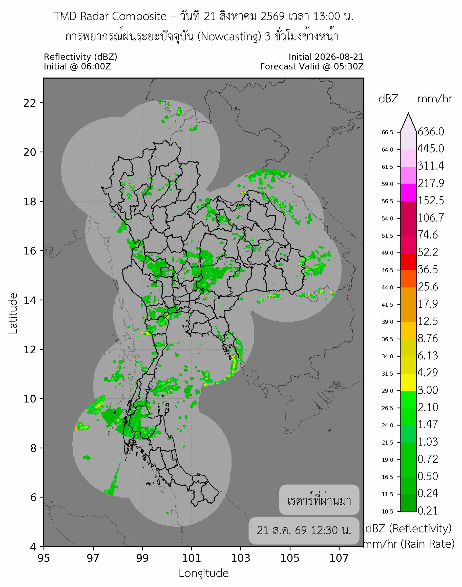
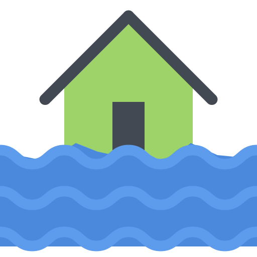
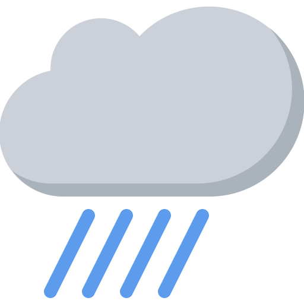
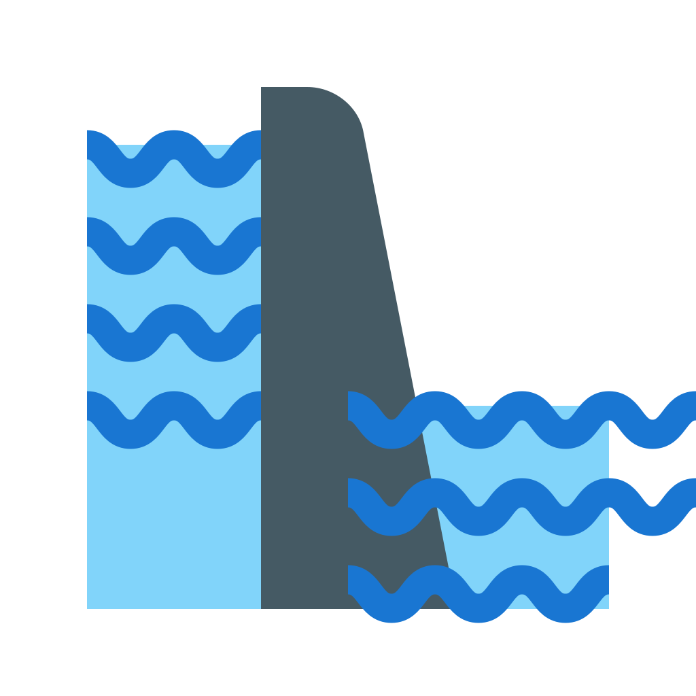

กำลังตรวจสอบประกาศล่าสุดจากกรมอุตุนิยมวิทยา
อ่านประกาศกรมอุตุนิยมวิทยาภาพรวมสถานการณ์ล่าสุด
สถานการณ์น้ำของนิคมอุตสาหกรรมทั่วประเทศไทย
สรุปข้อมูลจากสถานีฝนและระดับน้ำที่อยู่ใกล้พื้นที่นิคมอุตสาหกรรมเท่านั้น
เรดาร์ฝนคอมโพสิตล่าสุด
ภาพเรดาร์คอมโพสิตล่าสุดจากกรมอุตุนิยมวิทยา
{kind=link}

พายุเข้าใกล้ประเทศไทย
–กำลังตรวจสอบข้อมูลพายุ ThaiWater
เฝ้าระวังระดับน้ำ
–จังหวัดดูข้อมูลระดับน้ำ
ฝนตกหนักใน 24 ชั่วโมง
–จังหวัดดูข้อมูลฝน 24 ชั่วโมง
เฝ้าระวังน้ำท่วม 24 ชั่วโมง
–จังหวัดดูพื้นที่เตือนภัยจังหวัดที่ต้องเฝ้าระวังใน 24 ชั่วโมง
กำลังโหลดข้อมูลล่าสุด
Web Map
สถานการณ์ที่สัมพันธ์กับนิคมอุตสาหกรรม
วิเคราะห์สถานีฝนและระดับน้ำใกล้พื้นที่นิคมฯ เพื่อสนับสนุนการตัดสินใจของ กนอ.

–นิคมอุตสาหกรรมเฝ้าระวัง

–นิคมฯ ใกล้สถานีฝนหนัก

–นิคมฯ ใกล้ระดับน้ำผิดปกติ
–สถานีที่ต้องติดตามใกล้นิคมฯ
สถานการณ์และแนวทางดำเนินการ
แยกข้อมูลคาดการณ์ออกจากผลกระทบที่ยืนยันแล้วสถานการณ์ล่าสุด
สิ่งที่ผู้ประกอบการควรดำเนินการ
ตัวชี้วัดเฝ้าระวังทั่วประเทศ
เฉพาะสถานีที่สัมพันธ์กับพื้นที่นิคมฯแผนที่สถานการณ์
Web Map ระดับน้ำและฝนสะสม 24 ชั่วโมง
กดปุ่ม “ชั้นข้อมูล Layer” บนแผนที่เพื่อเลือกเปิด–ปิดข้อมูล
Web Map กนอ.
พื้นที่เสี่ยงน้ำท่วมฉับพลันใน 24 ชั่วโมงข้างหน้า
ข้อมูลจาก ThaiWater / สสน.
พื้นที่เสี่ยงน้ำท่วมฉับพลันใน 48 ชั่วโมงข้างหน้า
ข้อมูลจาก ThaiWater / สสน.
Web Mapข้อมูลระดับน้ำ ฝนสะสม 24 ชั่วโมง และนิคมอุตสาหกรรม
ชั้นข้อมูล
เลือกเครื่องหมายถูกเพื่อเปิดหรือปิดข้อมูลบนแผนที่
กำลังโหลดรายการชั้นข้อมูล…
พื้นที่เฝ้าระวัง
จัดลำดับพื้นที่และสถานีที่ต้องติดตาม
ใช้เพื่อกำหนดพื้นที่ประสานงานและการแจ้งเตือนผู้ประกอบการก่อนเกิดผลกระทบ
นิคมอุตสาหกรรมที่เข้าเกณฑ์เฝ้าระวัง
คำนวณจากสถานีฝนและระดับน้ำภายในรัศมี 30 กม.กำลังประมวลผลข้อมูล…
การสนับสนุนผู้ประกอบการ
ข้อมูลที่ควรแจ้งให้ผู้เกี่ยวข้องทราบความปลอดภัยบุคลากร
ตรวจเส้นทางเดินทาง จุดรวมพล และพื้นที่ห้ามเข้า
การผลิตและคลังสินค้า
เตรียมป้องกันเครื่องจักร วัตถุดิบ สินค้า และสารเคมี
โลจิสติกส์และสาธารณูปโภค
ยืนยันเส้นทางสำรอง ไฟฟ้า ประปา และระบบสื่อสาร
สถานีตรวจวัดที่ต้องติดตาม
| สถานี / จุดตรวจวัด | ค่าล่าสุด | สถานะ | แนวโน้ม | เวลา | แหล่งข้อมูล |
|---|
รายงานสถานการณ์น้ำเพื่อสนับสนุนผู้ประกอบการ
Industrial Estate Flood Situation Brief
–นิคมฯ เฝ้าระวัง
–นิคมฯ ใกล้ฝนหนัก
–นิคมฯ ใกล้ระดับน้ำผิดปกติ
–สถานีที่ต้องติดตาม
ภาพแผนที่สถานการณ์จาก Web Map กนอ.
ระบบจะบันทึกภาพเมื่อเปิดแท็บอินโฟกราฟิก
ระบบจะบันทึกภาพเมื่อเปิดแท็บอินโฟกราฟิก
สถานการณ์ล่าสุด •
ข้อมูลสำคัญ
ฝนสูงสุด 24 ชม.
แนวโน้ม
เส้นทางเข้า–ออก